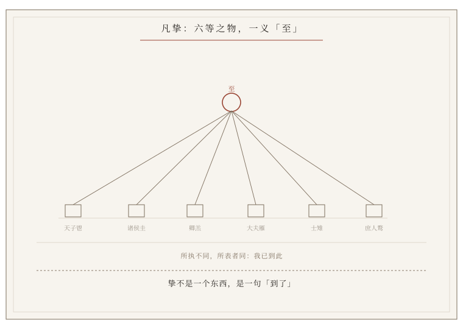

曲礼下 · 二·七十九 · 第 202 课
凡挚，天子鬯，诸侯圭，卿羔，大夫雁，士雉，庶人之挚匹；童子委挚而退；野外军中无挚，以缨、拾、矢可也；妇人之挚，椇、榛、脯、脩、枣、栗。注「挚之言至也」「天子无客礼，以鬯为挚者，所以唯用告神为至也」。
说什么事：见人手里拿什么，便是何等身分到了。
落在哪一层：礼，兼及礼器与礼意。论「挚」这一件小事上的等差分寸。
为何编在此位：上节收大飨之节，此节由祭转回人事往来，论相见之始。曲礼下以此节与「纳女」收篇，皆言「至」之辞。
【经】凡摯，天子鬯，諸侯圭，卿羔，大夫鴈，士雉，庶人之摯匹。童子委摯而退。野外軍中無摯，以纓、拾、矢可也。婦人之摯，椇、榛、脯、脩、棗、栗。
【注】摯之言至也。天子無客禮，以鬯為摯者，所以唯用告神為至也。童子委摯而退，不與成人為禮也。說者以匹為鶩。野外軍中無摯，以纓、拾、矢可也。非為禮之處，用時物相禮而已。纓，馬繁纓也。拾謂射韝。婦人之摯，椇、榛、脯、脩、棗、栗。婦人無外事，見以羞物也。椇、榛，木名。椇，枳也，有實，今邳、郯之東食之。榛，實似栗而小。
【疏】「天子鬯」者，酿黑黍为酒，其气芬芳调畅，故因谓为鬯也。天子无客礼，必用鬯为挚者，天子吊临适诸侯，必舍其祖庙，既至诸侯祖庙，仍以鬯礼于庙神，以表天子之至。「诸侯圭」者，谓公侯伯也，公侯伯用圭，子男用璧，以朝王及相朝聘，表于至也；此唯云圭，不言璧者，略可知也。「卿羔」者，郑注《宗伯》云「羔，小羊，取其群而不失类也」，《白虎通》云「羔，取其群而不党」，卿职在尽忠率下不党也。「大夫雁」者，郑注《宗伯》云「雁，取其候时而行也」，《白虎通》云「雁，取飞则行列也」，大夫职在奉命适四方，动则当以正道事君也。「士雉」者，雉取性耿介，唯敌是赴，士始升朝，宜为赴敌，故用雉也；羔、雁生执，雉则死持，亦表见危致命，《书》云「二生一死」是也。「庶人之挚匹」者，匹，鹜也，野鸭曰凫，家鸭曰鹜，鹜不能飞腾，如庶人但守耕稼而已，故郑注《宗伯》云「鹜取其不飞迁」。「童子委挚而退」者，童子见先生，或寻朋友，既未成人，不敢与主人相授受拜伉之仪，但奠委其挚于地而自退辟之；然童子之挚，悉用束脩也，故《论语》云孔子「自行束脩以上，则吾未尝无诲焉」。「野外军中无挚，以缨、拾、矢可也」，谓人在野外军旅之中，或应相见而无物可持为挚者，则不以旧礼，当随时所用；缨谓马繁缨，即马鞅也，拾，射韝也，矢犹箭也；不直云军中而云野外者，若军在都邑中则宜依旧礼，不可用军物也。「妇人之挚，椇、榛、脯、脩、枣、栗」，妇人无外事，唯初嫁用挚以见舅姑，故用此六物为挚也；椇即今之白石李也，形如珊瑚，味甜美；榛似栗而小也；脯，搏肉无骨而曝之；脩，取肉鍜治而加姜桂乾之如脯者。所以用此六物者：椇训法也，榛训至也，脯，始也，脩，治也，枣，早也，栗，肃也；妇人有法，始至，脩身早起，肃敬也。
挚 注「之言至也」。所执之物，所以表「我到了」。字本作贽。
鬯 以黑黍酿成之香酒，其气芬芳条畅，故名为鬯。天子无客礼，唯以之告神。
圭 公侯伯所执之玉。子男执璧，此不言璧，疏云「略可知也」。
匹 注「说者以匹为鹜」。鹜即家鸭。
委 置之于地。童子不与成人授受，故委而退。
缨 拾 缨为马繁缨，即马鞅；拾为射韝，射时护臂之衣。
椇 榛 脯 脩 椇即枳，一说今之白石李，形如珊瑚；榛似栗而小；脯为搏肉去骨而曝；脩为肉鍜治加姜桂而乾。
凡相见所执之物：天子用鬯酒，诸侯用圭，卿用羔，大夫用雁，士用雉，庶人用鸭。童子把挚放在地上便退下。在野外军中无物可执，用马鞅、射韝、箭也行。妇人所执之挚，是椇、榛、脯、脩、枣、栗。
此节列挚之等：自天子至庶人六等，外加童子、军中、妇人三样变例。一物各有一义，义都不是价钱：羔取其群而不党，雁取其候时而行，雉取其守介而死，鹜取其不飞迁。礼以物之性，写人之分。末三句是礼的余地：未成人者委而不授，在军者以时物代，妇人无外事则唯嫁时一见。等不可乱，而礼不因其不能而废。
第一层 挚之言至 注第一句即训诂，也是全节之纲。挚不是礼物，是「到了」的凭据。故天子无客礼，仍须有挚——以鬯告神，神前为「至」。礼之所重，在「至」不在「物」。
第二层 取义于物之性 疏解六等，句句落在物性上：羔群而不党，雁候时而行列，雉耿介而死节，鹜不飞迁而守耕稼。物选得准，义就自己站住；不必另加告诫，执物即是自表。
第三层 礼不具则权 野外军中无挚，以缨、拾、矢；疏特别点出「不直云军中而云野外」——在都邑中仍须依旧礼，不可用军物。可见权变有条件：不在礼之地，才用时物。又童子未成人，不与成人授受，故委挚而退——不是免礼，是换一种行礼之法。
第四层 妇人之挚取名字之义 椇训法、榛训至、脯训始、脩训治、枣训早、栗训肃，六物串成一串妇德：有法、始至、修身、早起、肃敬。疏引《左传》庄二十四年「女贽不过榛、栗、枣、脩，以告虔也」，证诸物皆取名为义。这一层最见古人立礼之法：物是符号，符号自己会说话。
与今日何干 见面带什么，本身就是一句话。带得对，不必多言；带得不对，多说无益。今人往来多论价，古人先论义——这一节可作镜子：我手里这一件，替我说了什么。
| 左 | 右 |
|---|---|
| 挚之言至 | 所执以表「到了」，不在物 |
| 天子以鬯 | 无客礼，唯以告神为至 |
| 卿羔 | 取其群而不党 |
| 大夫雁 | 取其候时而行 |
| 士雉 | 取其守介而死，不失其节 |
| 庶人鹜 | 取其不飞迁，守耕稼 |
| 童子委挚而退 | 未成人，不与成人授受 |
| 军中用缨拾矢 | 非为礼之处，用时物 |
| 妇人之挚六物 | 椇法、榛至、脯始、脩治、枣早、栗肃 |
画一条宗庙廊下的长案，案上自左至右依次列六件物：一卣（有提梁的香酒器）、一圭（长条玉版）、一只小羊的剪影、一只雁、一只雉（长尾鸟）、一只鸭。六件物各占一格，间距相等，器物高低略有参差但底座在同一条案线上。案前空无人。画面右侧近案处放一小几，几上横置一枚短箭与一只臂衣（护臂），示军中权用之物。全画不写文字、不画人脸。赭色只用在雉的长尾与那枚箭杆上。
